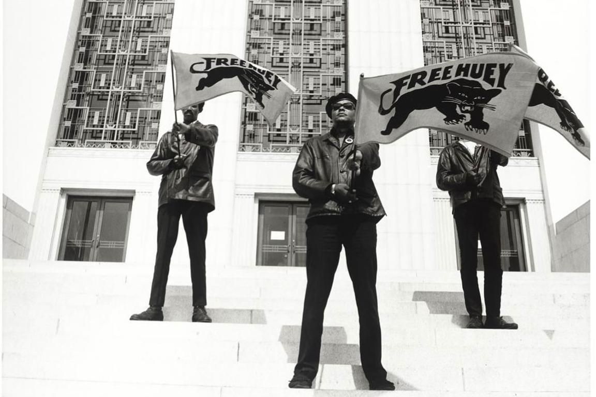
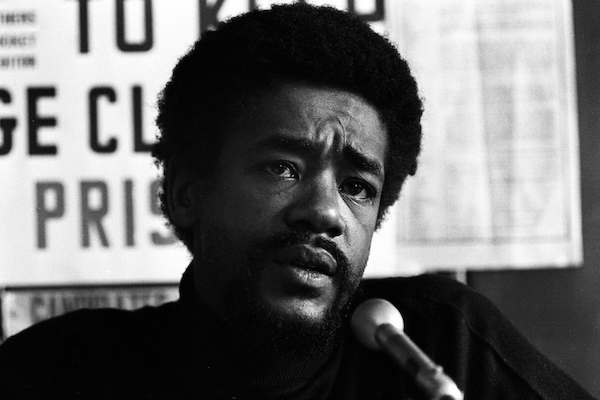

BLACK PANTHER PARTY
BACKGROUND
The Black Panther Party was a revolutionary socialist organization that emerged in the United States during the Civil Rights Movement of the 1960s. Founded in Oakland, California, in 1966, the party was dedicated to the protection of Black communities from police brutality and other forms of oppression. The party was founded by Bobby Seale and Huey P. Newton, two college students who were inspired by the ideas of Malcolm X and other black nationalist leaders. The party's philosophy was based on the idea of "revolutionary intercommunalism," which called for the creation of a socialist society based on the principles of community control, self-determination, and solidarity among all oppressed peoples. The party also believed in the right of Black people to defend themselves against police brutality and other forms of violence. The party gained national attention for its community programs, which included free breakfast programs for children, health clinics, and educational initiatives. The party also organized armed patrols of Black neighborhoods to monitor police activity and protect residents from harassment and abuse.
FRED HAMPTON

Fred Hampton was a young, charismatic leader of the Black Panther Party in Chicago during the late 1960s. He was born on August 30, 1948, in Summit, Illinois, and grew up in a working-class family. Hampton became involved in activism at a young age, and joined the Black Panther Party in 1968 at the age of 20. As a leader in the party, Hampton quickly became known for his organizing skills and his ability to inspire others. He worked tirelessly to build alliances with other community organizations and to address the needs of Black people in Chicago's impoverished neighborhoods.
HUEY P. NEWTON

Huey P. Newton was an American activist and revolutionary who co-founded the Black Panther Party with Bobby Seale in 1966. Born in Monroe, Louisiana in 1942, Newton grew up in poverty in Oakland, California. He earned a degree in philosophy from Merritt College and became active in the civil rights movement. As a co-founder of the Black Panther Party, Newton played a key role in developing the party's ideology and organizing its activities. The party was dedicated to protecting Black communities from police brutality and other forms of oppression, and it advocated for the creation of a socialist society based on community control and self-determination.
BOBBY SEALE
Bobby Seale is an American activist and political organizer who co-founded the Black Panther Party with Huey P. Newton in 1966. Born in Dallas, Texas in 1936, Seale grew up in Oakland, California and became involved in civil rights activism at a young age. As a co-founder of the Black Panther Party, Seale played a significant role in developing the party's political platform and organizing its activities. The party was dedicated to protecting Black communities from police brutality and other forms of oppression, and it advocated for the creation of a socialist society based on community control and self-determination.